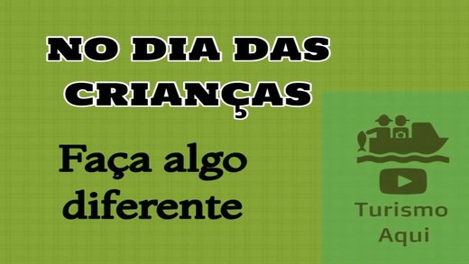

00:00:08.242
Cartela verde do Turismo Aqui sugere fazer algo diferente no Dia das Crianças.
Local não identificado
A abertura propõe um programa de feriado com as crianças e a família.
Transcrição · 00:00:00 | 00:00:07
Turismo Aqui — quadro de vídeo publicado no YouTube